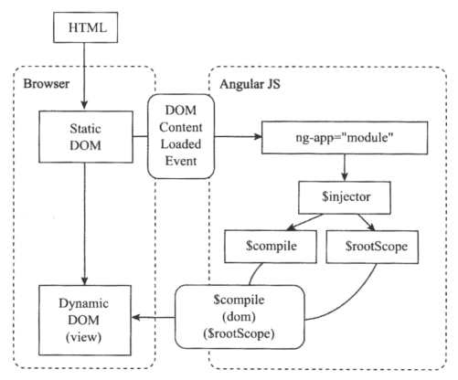

angularjs巩固实践-32-ng启动过程
ng官方提供的开发指南中，给出了如下的启动过程图：

对上图详细分析，包括其省略的步骤，
1. 浏览器下载HTML/CSS/Javascript
打开一个网站，首先下载HTML文件，在下载HTML文件的同时，浏览器会开启一些辅助线程下载所关联的其他文件，如js、css、图片等
2. 浏览器开始构建DOM树
在下载文件的同时，浏览器同时构建DOM树，当网速慢时，能发现页面只出现一部分的DOM,同时这部分的DOM中内嵌的脚本也会执行
3. jqLite / jQuery初始化
这些脚本中最先导入的jqLite(若没有在ng之前引入jquery，则为内嵌ng中的jqLite，否则为jquery)会进行初始化工作，在document对象上注册DOMContentLoaded事件，程序通过调用$.ready(callback)将回调函数注册到这个事件中，该回调在执行之前还需要加载其他脚本。
4. angualr初始化
开始加载脚本中的angular或其子模块，包括自定义的app.js以及其他第三方模块，这些脚本会按引入的顺序开始各自的初始化过程。
各种ng模块的初始化过程大致相同，比如angular内置的名为“ng”的模块，其初始化步骤为：
- 按名字创建一个模块、所谓模块就是一个对象，它是其他angular对象的注册表
- 在此模块中注册各种ng对象，如Controller、Service、Directive等，比如下列常用的的一些方法：
myModule.controller('xxx',...)其实就是$controllerProvider.register的快捷方式；myModule.service('xxx',...)其实就是$provider.service的快捷方式；myModule.directive('xxx',...)其实就是$compileProvider.directive的快捷方式。 - 这些元素注册后就形成了一个由名字和回调函数组成的映射表，当这些回调并不会执行。
- 在模块中注册“config回调函数”，它将在模块刚被初始化时执行。
- 在模块中注册“run回调函数”，它将在模块初始化完后执行。
注：以上2、3、4、5的顺序是任意的，因为仅仅知识注册回调函数而已，并不会执行
5. jQuery启动
等页面及其直接引用的js文件都下载完后，DOM也已经构建完成，此时浏览器触发document对象的DOMContentLoaded事件，在$.ready中注册的回调函数也会在此时调用，在这个回调函数中，ng启动代码会执行。
6. ng启动
前面注册的未执行的各种ng回调函数，就是在此时开始逐个执行的，ng先在DOM中找一个带有ng-app（或其等价形式data-ng-app / ng:app / x-ng-app）指令的节点（这个指令通常会出现在body或html元素上，但也可以是任意元素，即一个页面可以有多个ng程序）
接下来，ng找到这个ng-app的节点后，调用angular.bootstrap(element, moduleName)，这里的element就是这个带有ng-app的节点，而moduleName就是ng-app="moduleName"中指定的值moduleName
注：ng的自启动方式只会启用第一个ng-app的module，对于多个ng-app启动方式，必须手动执行angular.bootstrap方法来启动，所以推荐在页面中只使用一个ng-app，然后以Module和Controller来划分页面
7. 加载子模块
在ng将模块和DOM节点关联起来之前，这些DOM都是“死”的，它们和数据模型之间还没有建立联系，因此无法反应数据模型的变动，在本步之前都是准备工作，本步开始将其变成“活”的——即绑定数据，响应事件，自动更新等
在此阶段，ng会先创建一个注入器（injector），并将它关联到所在的节点上（在前面注册的ng对象都需要通过注入器才能被其他代码使用），然后对当前节点所关联的模块以及所依赖的模块进行初始化，这时，前面注册的所有“config回调函数”就会被顺序执行。
注：前面注册的大多数对象都无法使用，因为没有配置完成，在config回调函数中能使用的只有注册的常量（Constant）对象和Provider类。这个阶段是程序唯一可以直接访问Provider类对服务进行配置的地方。比如路由服务的Provider就是这个阶段进行初始化配置的，但这个路由服务配置其实只负责记录URL到“模版/控制器”组的映射表以供后续使用。
8. 启动子模块
模块加载完后，会执行所有的“run回调函数”，在此阶段，各种ng对象都可以使用，包括Service、Factory。然后，路由模块会获得控制权，使用$location服务解析当前页面的URL,然后根据这个URL查找相应的“模块/控制器”，然后准备渲染对应的页面。
9. 渲染页面
路由模块先创建一个Scope对象，并且加载模块，加载完后将它的内容传给$compile对象，$compile会先把它解析成一个静态DOM树，然后逐个扫描DOM树中的指令，通过对这些指令把Scope对象和DOM树关联起来，包括渲染内容的函数和进行事件处理的函数。最后用它替换特定指令所在的节点，在ngRoute中是带有ng-view的节点，在angular-ui-router中则是带ui-view的节点。
10. 数据绑定和摘要循环（Digest Loop）
此时，页面已经显示出来，但数据并未渲染，ng会自动使用Scope中的数据将绑定的指令渲染出来。
但，若此时用户修改数据会发生什么？理论上，应该自动渲染修改后的数据，但问题是：什么时候渲染这些更新的数据，同时做到高效及时。
此时就需要一个ng中的重要机制了：脏检查机制。简单的理解就是ng会给每一个Scope成员变量求一个摘要值(所谓摘要值，就是能唯一标识一个变量的值)，并且保存在一个变量中，当调用Scope对象的$digest/$apply方法时，会重新计算一遍摘要值，只要数据变化，自动更新界面，这个过程就称为摘要循环。不过，$digest函数是不需要应用程序自己调用的，$apply其实对它的包装。
但，即使是$apply函数也很少需要主动调用，因为在各种ng时间指令以及$timeout服务中，都会自动调用$apply来确保页面刷新。当使用第三方组件中的事件时一定要调用$apply，否则其事件处理函数中对scope中的变量的更新不会同步到界面中。
至此，典型的ng程序启动完成。